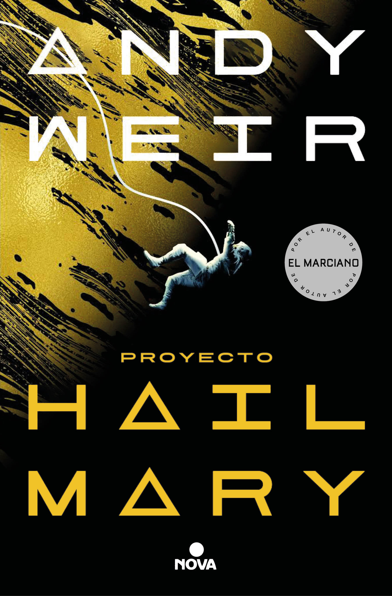

Proyecto Hail Mary
Reseña por Jorge I. Zuluaga

Ver reseña en GoodReads (necesita cuenta)
Este es posiblemente el mejor libro que leeré en 2022. Tal vez me estoy adelantando al hacer un pronóstico como este en el mes enero, pero de verdad, no creo que me encuentre pronto con una historia más original, un relato más entretenido e incluso divertido y que al mismo tiempo satisfaga mis mas "bajos instintos" científicos y técnicos.
Andy Weir es sencillamente ¡un puto genio!
Comencé a leer "Proyecto Hail Mary" por la peor de las razones: todo el mundo lo estaba leyendo. Es decir, sucumbí a la tendencia.
Lo que no imagine, y, la verdad sea dicha, nadie de los que lo estaba leyendo en mi entorno inmediato me lo contó, era la excepcional cantidad de buenas atributos que tenía la novela. A diferencia de otras tendencias, estos atributos si que explican bien porque es una novela tan leída. Tal vez para muchos no sea más que una obra de ciencia ficción entre cientos. Pero para mí, ha sido un verdadero manjar literario.
Debo confesar que, a pesar de mi profesión (soy físico y trabajo en astronomía, en particular en exoplanetas y astrobiología) el género de ciencia ficción no es precisamente mi especialidad. A decir verdad ningún genero literario lo es: me considero un lector más bien omnívoro (con ciertas alergias leves). Aún así creo que, por páginas leídas, puedo juzgar mejor una novela histórica que una novela de ciencia ficción. Por eso debo pedirles que se tomen esta reseña con mucho escepticismo; sobre todo aquellos apartes con un exceso de superlativos (antes y después de este párrafo).
También es importante advertir que lo que sigue puede contener algunos spoilers. Porque si una cosa tiene "Proyecto Hail Mary", es que cualquier dato, por pequeño que parezca, podría arruinar las mejores sorpresas de la historia.
Por dónde comenzar (¡¿comenzar?! ¡pero si ya llevas 3 mil caracteres!).
Empecemos por el título: nada que ver con la historia.
Tal vez ese sea uno de las cosas que hace atractiva la novela para la mayoría. Pero también puede hacerla no tan atractiva para un cierto tipo de lectores (fue mi caso por ejemplo).
Después de sus otros dos exitosos Best sellers, "El marciano" y "Artemisa", que tienen nombres que se corresponden perfectamente con su contenido, Andy Weir, el genio creador de esta epopeya extraterrestre (que es el género que deberíamos inventar para clasificarla) sorprende con un título como "Proyecto Ave María", como podría traducirse al castellano.
De entrada les advierto también: no esperen una explicación para el nombre en la novela (no lo he hecho, pero estoy seguro que en entrevistas con su autor o en la Wikipedia debe estar la razón del nombre del proyecto; no he leído todavía la explicación, ni la leeré por ahora).
Si me pidieran que propusiera un mejor nombre llamaría a la novela: "Tau ceti" (¿predecible?), "Astrofagos" (¿muy directo?) o "The Grace of Rocky", un juego de palabras que entenderán quiénes la hayan leído. Si este es el caso, estoy seguro que algunos estarán de acuerdo conmigo y de que podrán inventar otros dos o tres títulos más convenientes.
Uno de los aspectos más originales de la historia es la narración a dos tiempos (debe existir un término técnico en la literatura para este recurso, disculpen la ignorancia): una en el futuro lejano (o en el presente de sus protagonista) y otra en el pasado. La manera en la que Weir se la ingenia para no contarnos toda la historia desde el principio es sencillamente ¡muy ingeniosa!, y el resultado ¡simplemente genial!.
Lo más sobresaliente para mí de "Proyecto Hail Mary" es el nivel de los detalles técnicos.
Estoy seguro que quienes, como yo, aprecian la precisión y el rigor científico, incluso en el arte y en particular en la literatura o el cine de ciencia ficción, encontraran esta novela como un ejemplo excepcional de lo que debería ser una narración construída alrededor de la ciencia y la técnica.
Y es que no hay una sola página de "Proyecto Hail Mary" donde no haya algo de ciencia y tecnología en el centro de la trama. Incluso los apartes más humanos, están cargados de un de buenas ciencias humanas (sociología, psicología, ciencias políticas e incluso filología).
Ahora bien, a quiénes les gusten menos los detalles científicos y técnicos, o los encuentren muy difíciles de entender, tal vez pensaran que a Andy Weir se le fue un poco la mano. Y en efecto. Hay que admitir que "Proyecto Hail Mary" es una novela muy técnica.
En no pocas ocasiones sentí que estaba leyendo una obra de divulgación científica.
Así por ejemplo, la descripción pormenorizada de los mecanismos celulares, moleculares y atómicos implicados en la biología de los astrófagos y de otros organismos vivos que aparecen en la novela (y dejo ahí para no arruinar la sorpresa), así como de los nuevos materiales que inventa Weir (siendo la xenonita el más increíble) es sencillamente impresionante.
Ya había leído algo sobre el que ahora considero es el "súper" poder de Weir como autor de ciencia ficción: sus conocimientos técnicos y la poca vergüenza que demuestra para usarlos. Pero una cosa es saberlo por un chisme y otra leerlo directamente. ¡Grande Andy Weir!
Quiénes hayan leído mucha más ciencia ficción que yo, seguro podrán contradecir lo que voy a decir. La solución que plantea Andy Weir para lo que será el primer contacto de la especie humana con una civilización extraterrestre (spoiler alert) es muy ingeniosa: el lenguaje de los extraterrestres, su nivel de desarrollo relativo, sus sentidos y sistemas de comunicación, su desarrollo tecnológico versus su desarrollo científico, su lugar de origen, su origen biológico, etc.
El uso de la hipótesis de la panspermia (la idea de que la vida en la Tierra podría haber llegado del espacio ultraterrestre) para justificar algunos de los aspectos más problemáticos del descubrimiento de vida extraterrestre, pero aún peor, de sus extrañas propiedades, es también muy ingenioso.
No hay casi ninguna área de la ciencia o la tecnología que quede por fuera de la novela: biomedicina, nuevos materiales, astrofísica estelar, física de partículas, ciencias planetarias, biología celular (¡sobre todo biología celular!), filología, procesamiento de señales, astronáutica, mecánica orbital, exoplanetas, electromagnetismo, física de la radiación ionizante y no ionizante, espectroscopía, relatividad, genética, evolución, acústica, química y bioquímica, neurología del sueño, tecnología de alimentos, medicina del vuelo espacial y posiblemente un muy largo etcétera (solo estoy mencionando las que recuerdo).
El personaje de Rocky es alucinante: imaginativo, curioso, habilidoso y al mismo tiempo entrañable. Quién no quede prendado de Rocky al leer "Proyecto Hail Mary", y para usar el mejor estilo de Andy Weir, es porque no tiene una buena bomba que haga circular plasma con glóbulos rojos por su sistema circulatorio.
Si hay algo que todos los humanos apreciamos de una historia es que su final satisfaga nuestras expectativas. Una novela puede ser maravillosa, pero si tiene un final inapropiado, pierde gran parte de su atractivo. Con "Proyecto Hail Mary" imagine un par de finales bastante predecibles, pero ninguno como el que finalmente quedó. Aún así ¡mejor final imposible!.
Eso sí. Me quede esperando al final la reacción de un cierto personaje (¡ya sabrán de quién estoy hablando cuando lean la novela!). Sin embargo, debo aceptar que en la literatura, y en el arte en general, no todo tiene que ser explícito y exhaustivo (ya Andy Weir nos suelta suficiente pita a través de la novela a aquellos que tenemos la mente más bien cuadriculada). Aún así conservo la esperanza de que la reacción de ese personaje, fue como me la imagino.
Así que me sostengo: "Proyecto Hail Mary" será el mejor libro que leeré en 2022.
No dejen ustedes para el 2023 comenzar a leerlo.
Segunda lectura (2026):
Heme aquí, sentado poco más de cuatro años después, escribiendo un complemento de mi reseña original tras haber leído por segunda vez —y en una modalidad mixta: audiolibro y papel— esta novela maravillosa.
La motivación para la relectura fue el lanzamiento de la adaptación al cine de esta historia. En el momento en el que escribo estas palabras, no he visto la película y no sé si quienes adaptaron estas 550 páginas (o casi 19 horas de audio) de aventuras, ciencia y técnica lograron un buen resultado en solo dos horas y media de metraje.
Ahora sé por qué se llama Proyecto Hail Mary y ya no me parece tan malo el título. Como era de esperarse de un autor tan estadounidense como Weir —algo de lo que se burla permanentemente en la voz de Ryland Grace—, Hail Mary es un término del fútbol americano usado para un pase desesperado al final de un partido, lanzado con la esperanza de ganar en el último segundo. Ahora todo tiene sentido (gracias a Caliche, por aclararme lo del nombre en un comentario a esta reseña). Mi propuesta de llamarla Astrófagos no estaba tan mal encaminada; de hecho, un amigo que vive en São Paulo me contó que allí se tituló Devoradores de Estrellas. En Latinoamérica se optó por Proyecto Fin del Mundo, una adaptación literal que explica mejor el contexto a quienes no conocen el término deportivo.
Después de cuatro años de lecturas, he descubierto otras novelas con ese estilo narrativo que tanto admiré en esta obra: dos historias paralelas en tiempos diferentes. Sin ir más lejos, la maravillosa novela Hamnet de Maggie O’Farrell, que también adoré, utiliza la prolepsis, que sería el nombre técnico de este recurso.
En esta ocasión salté entre el audiolibro y el papel porque quería terminar la novela en solo dos días. Este experimento (me siento como una suerte de Ryland Grace literario) me permitió descubrir que mi velocidad de lectura en papel equivale a una escucha de 1.8x. Este dato puede servir para informar a quienes critican a los que audioleemos: no lo hacemos para terminar antes, sino por el placer de que nos cuenten una historia con la emoción del lenguaje hablado, además de la ventaja obvia de poder «leer» en cualquier situación.
Si ya leyeron Proyecto Hail Mary en papel, por favor, escúchenlo en audiolibro sin demora. ¡Amarán cien veces más a Rocky y reirán a carcajadas con las ocurrencias de Grace! El libro está disponible en Amazon y Google Play Books a muy buen precio.
Sobre el contenido de la novela, me mantengo en lo dicho en mi primera reseña, aunque en esta relectura he captado muchos más detalles científicos. Al punto que ahora sueño con diseñar un curso de astrobiología basado en la novela. ¡Es una herramienta pedagógica increíble! Tomen la siguiente enumeración como un «mensaje en una botella» para mi yo del futuro, el profesor del curso «Astrófagos y eridianos».
- Anatomía del estado comatoso.
- Relatividad de los viajes interestelares.
- Biología celular básica.
- Rayos cósmicos y sus efectos sobre la vida.
- Física de la gravedad artificial.
- Física de las atmósferas planetarias.
- Estrellas cercanas.
- Distancias en astronomía.
- Física de la radiación: radiación de cuerpo negro y radiaciones de alta energía.
- Mecánica orbital: planetas y naves.
- Física de materiales.
- Física del sonido y posibles modalidades de comunicación terrestre y extraterrestre.
- Evolución biológica natural y dirigida.
- Dinámica de poblaciones: depredadores y presas.
- Organismos eusociales multicelulares.
- Sistemas numéricos y su relación con la rotación y traslación de los planetas.
- Propiedades de las estrellas: actividad magnética y rotación.
- Neutrinos y conversión de energía en pares y viceversa.
- Física de la propulsión con luz.
Si ven otros temas que me falten, no dejen de escribirme.